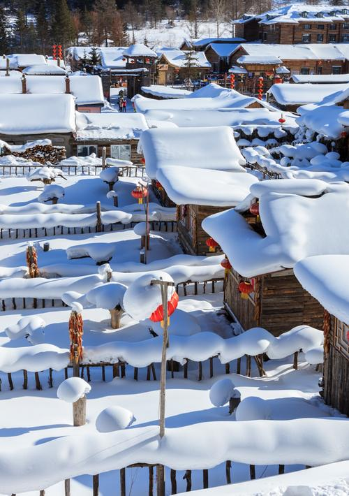
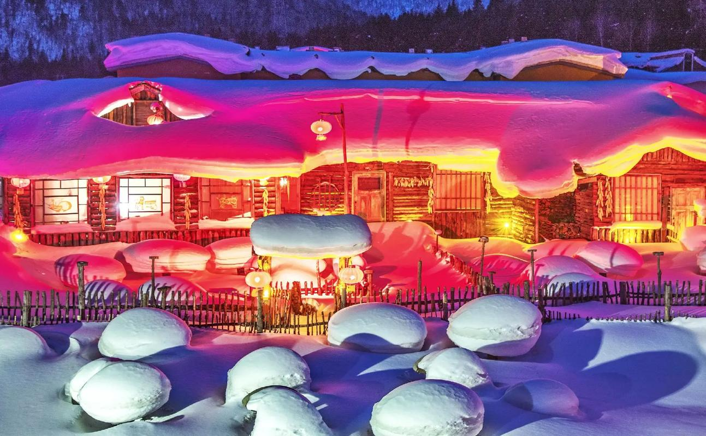
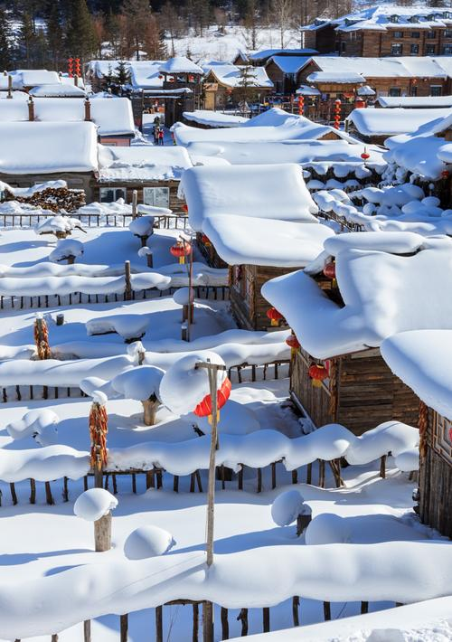
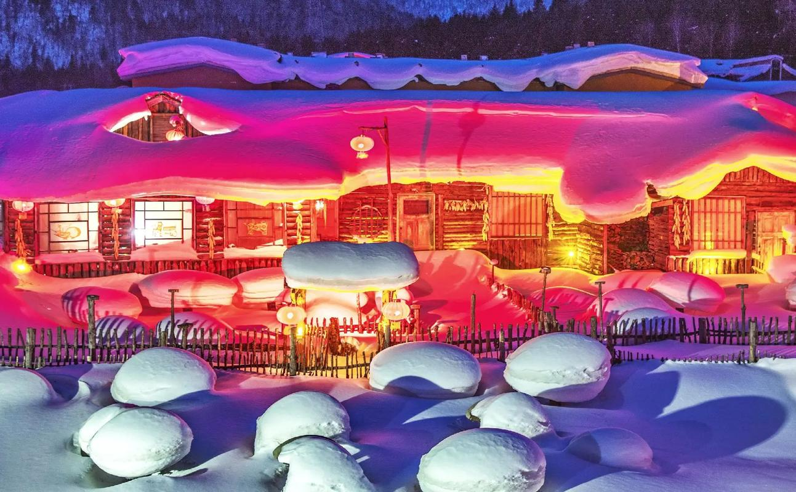

介绍
雪乡也叫做双峰林场，这里雪质好、粘度高，冬季可见到自然形成的各种雪堆造型，包括有名的“雪蘑菇”。在雪乡可以滑雪、玩雪圈，或者起个大早坐雪地摩托上山看日出，还可以去徒步翻越羊草山，感受林海雪原的魅力。
雪乡位于海林市西南山区，这一带降雪频繁，每年有七个月的积雪期，其中12月到次年3月间是来雪乡看的好时节，此时的雪量大、积雪厚，游客也相当多。雪乡是个小村子，雪韵大街是村上较为热闹的地方，这条将近五百米长的大街两侧聚集各种商店和旅店，晚上店门前挂满的红灯笼显得很有节日气氛。
你可以在雪韵大街上买个冻得像石头般结实的冻梨、冻柿子尝尝，或者去用老式火车头装修成的酒吧感受不一样的氛围。雪韵大街上的“梦幻家园”，可看到各种漂亮的“雪蘑菇”，算得上是雪乡的知名景点了，而“梦幻家园”后面的小山包则是摄影取景的好地方。
很多人来雪乡会做两件事儿，一是去村子边上的滑雪场滑雪、玩雪圈、打雪仗，好好地疯一把，这里请教练比亚布力便宜些。还有就是去村郊的大秃顶子山、或者羊草山上看日出，但能否看到美丽的日出就全凭机遇了。
说起“雪乡”就不得不提“雪谷”，雪谷与雪乡之间隔了一座羊草山，很多户外爱好者会体验穿越羊草山。从雪谷经羊草山穿越到雪乡是所谓的“正穿“，从雪乡穿到雪谷是”反穿“，若要一大早上去羊草山看日出，建议从雪乡出发上山，难度相对会比较小。
开放时间
全年 全天开放
优待政策
儿童：身高1.2米（含）以下的儿童;凭有效证件的6周岁（含）以下儿童，免费；凭有效证件的7周岁（含）-18周岁（含）未成年人，半价
导游：持有文化和旅游部颁发的电子导游证并佩戴卡片式导游身份标识；（以旅行社出团计划单为准，每团限1名全陪或1名地陪），免费
老人：65周岁（含）以上的老年人，凭本人有效身份证件，免费；凭有效证件的60（含）-65周岁（不含）的老年人；，半价
残疾人：残疾人（含退出现役的残疾军人），凭本人有效残疾证件，免费
军人：现役军人（含军队离休、退休干部），凭本人有效军官证件，免费
随团驾驶员：旅行社随团驾驶员A1、A2证；（限每团1名），免费
记者：中华人民共和国国家新闻出版广电总局颁发新闻记者证，免费
学生：全日制大学本科及以下学历学生，凭本人有效学生证件，半价
全国公安民警、医护人员及同行的5位直系亲属：2023年2月6日—2023年2月28日期间，直系亲属包括配偶、父母、子女、祖父母、外祖父母、孙子女、外孙子女；凭本人工作证件、身份证及同行直系亲属的身份证，到雪乡景区各山门服务大厅售票窗口办理免票手续，完成后即可免费乘坐观光车进入景区，具体以景区售票处为准。免费
补充说明：注：免费及优惠政策仅适用雪乡门票
 


